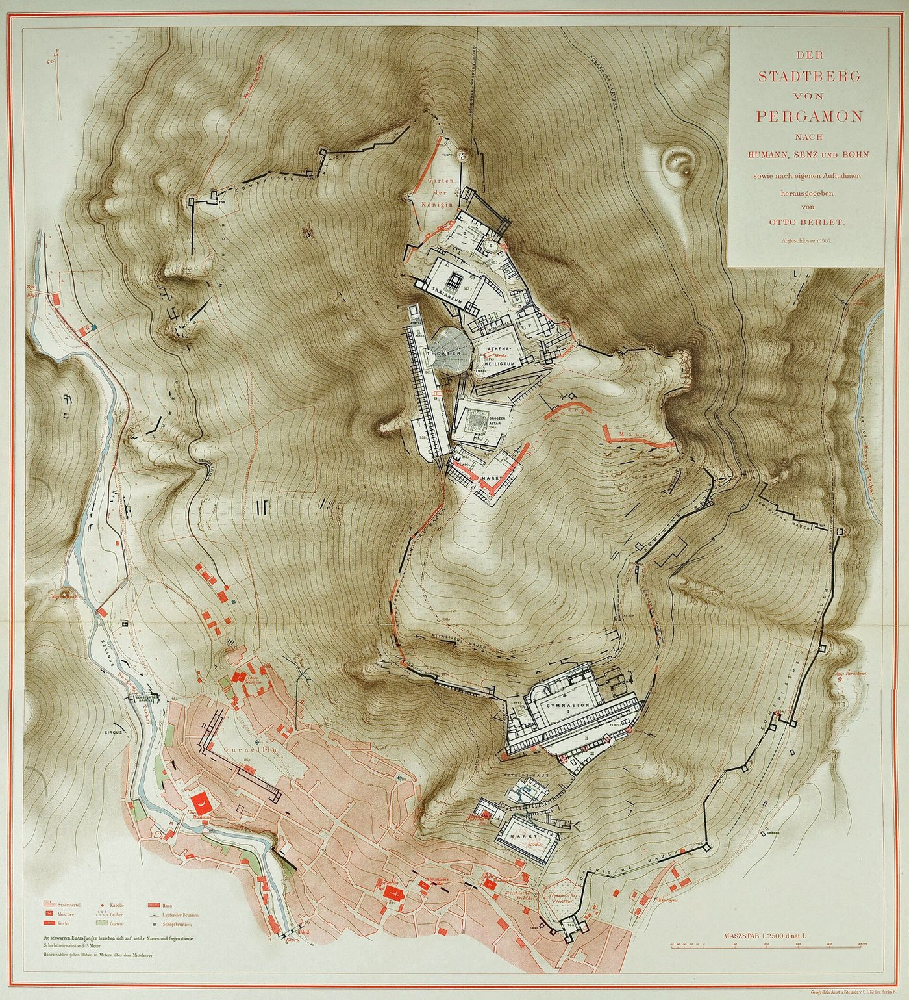

ⓘ
ⓘベルガマのアクロポリスは、ヘレニズム時代のペルガモン王国の首都ペルガモンの政治と文化の中心で、平野から数百メートルそびえる険しい丘の上に築かれました。アッタロス朝のもとで街は芸術と学問でアレクサンドリアと競い合い、図書館と羊皮紙で記憶されています。最も印象的なのは斜面に刻まれた劇場で、古代世界で最も急な劇場のひとつです。ローマ時代のトラヤヌス神殿の白い大理石の円柱がスカイラインを形づくっています。有名なゼウスの大祭壇のフリーズは現在ベルリンにあります。ロープウェイで登ることができ、2014年からユネスコ世界遺産に登録されています。
⏳ 時間旅行
| 当時 | 今日 |
|---|---|
| アッタロス朝の都。宮殿、神殿、図書館がひとつの丘に | 首都の政府施設がひとつの丘に集まっているようなもの |
| 図書館：蔵書20万巻と伝えられる | 大きな大学図書館 |
| 劇場：約1万席、78列。古代世界でもっとも急傾斜の劇場 | 12階建てのビルほどの高さの観客席 |
| ゼウスの大祭壇：神々と巨人の戦いを描いた巨大なフリーズ | 街でいちばん有名な建造物。今はベルリンの博物館に |
| 羊皮紙がここで大量に作られ、その名もペルガモンに由来する | 都市の名を持つ製品、いわばブランド |
| 斜面の段々を一段ずつ積み上げた街 | 斜面に沿って層をなす街 |
🎧 ペルガモンの一日
紀元前170年、エウメネス2世の時代。平野から曲がりくねった坂道を上っていきます。段ごとに市場、運動場、神殿と、新しい建物が現れます。
頂上近くでゼウスの大祭壇が見えてきます。大理石のフリーズでは神々が巨人と戦っています。その先の図書館では、学者たちが羊皮紙に書かれた書物を読み、書き写しています。
夕方、劇場へ下ります。客席はとても急で、いちばん上から見る舞台は手のひらほど。1万人の観客と芝居を観るあなたの眼下には、平野が広がっています。
今、丘に残る祭壇は土台だけで、フリーズはベルリンの博物館にあります。それでも劇場は同じ斜面にあり、頂上へはロープウェイで上れます。
数値は推定で、資料によって異なります。図は説明用で、縮尺どおりではありません。
遺跡平面図

平面図: Otto Berlet · Public domain · Wikimedia Commons
これは歴史的な図面で、現在の発掘状況とは異なる場合があります。
よくある質問
ベルガマのアクロポリスはどこにありますか？
ベルガマのアクロポリスはBergama, イズミル（エーゲ海地方）にあります。行き方はこのページの地図または経路ボタンをご利用ください。
ベルガマのアクロポリスの見学にはどのくらい時間がかかりますか？
平均見学時間：2〜4時間。
ベルガマのアクロポリスでミュージアムパスは使えますか？
文化観光省が管理する博物館・遺跡で通常利用できます.
ベルガマのアクロポリスはどの時代のものですか？
ベルガマのアクロポリスはヘレニズム / ローマの時代のものです。
ベルガマのアクロポリスの近くには他に何がありますか？
近くの文化スポット：ベルガマ・赤いバシリカ (~2 km), ベルガマ博物館 (~2 km), ベルガマ・アスクレピオン遺跡 (~2 km)。
ベルガマのアクロポリスに音声ガイドはありますか？
はい。このページの「聴く」ボタンで、日本語を含む8か国語で紹介を聴くことができます。
♿ バリアフリー情報
この場所の確認済みバリアフリー情報はまだありません。来訪者や博物館から情報を集め、確認後にここに掲載します。
文化観光省が管理する博物館と遺跡では、障害のある方と付き添いの方1名は、証明書を提示すると無料で入場できます。訪問前に最新の条件をご確認ください。 バリアフリーガイド →
♿ バリアフリー情報を送る
関連ガイド
写真
周辺の宿泊施設とレストラン
あなたのお店をここに掲載しませんか？ 広告掲載